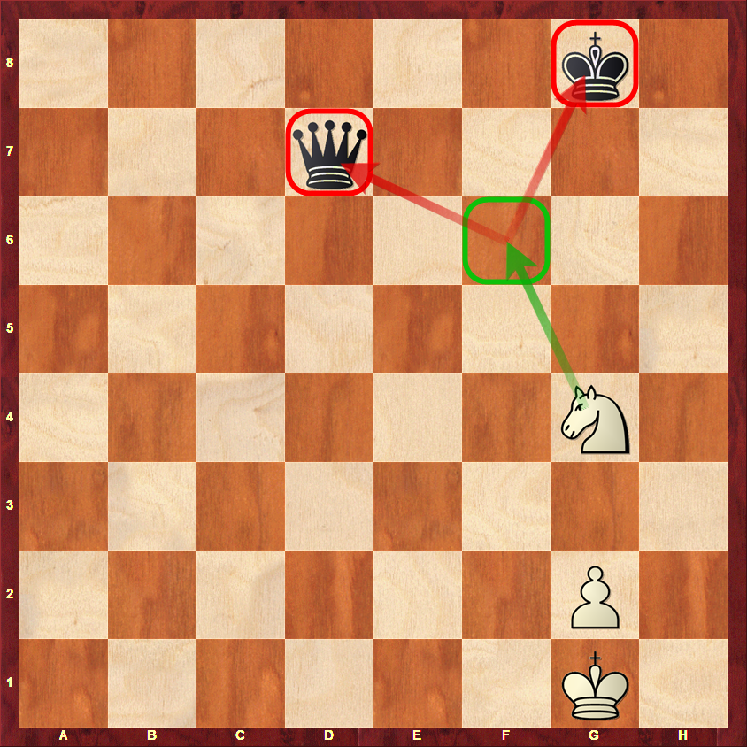
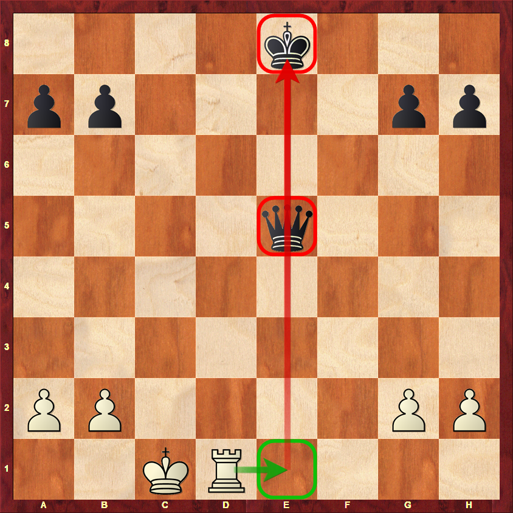
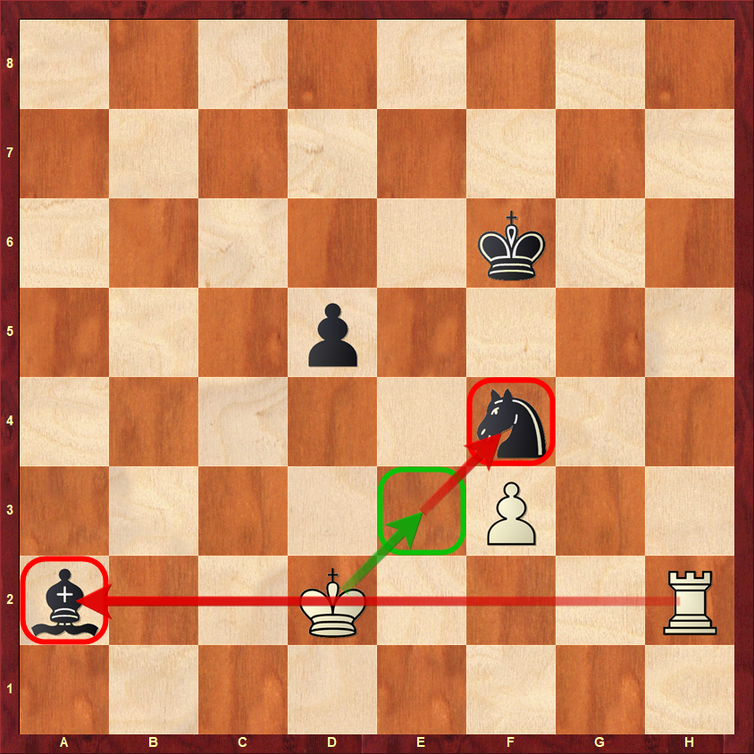
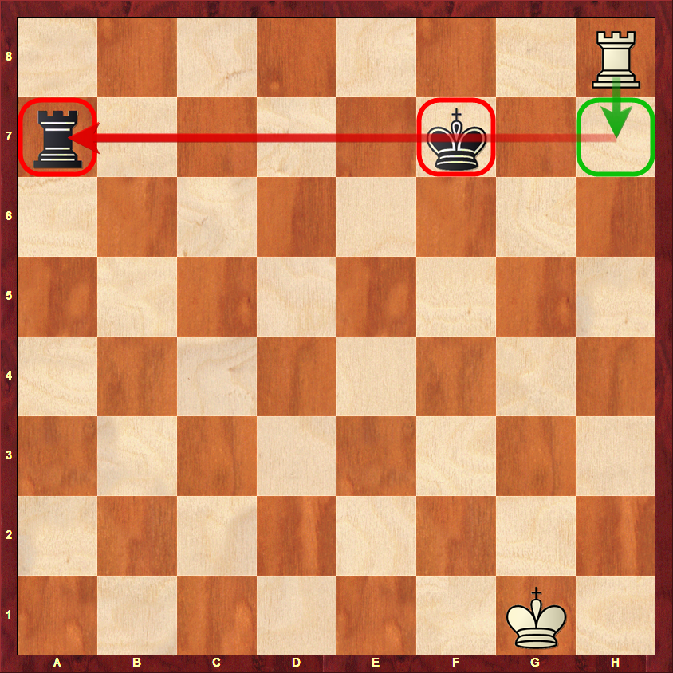
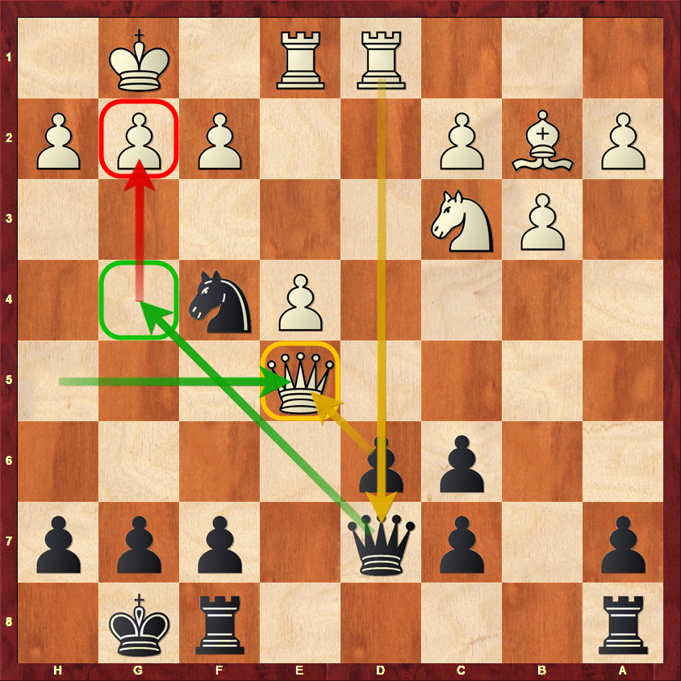
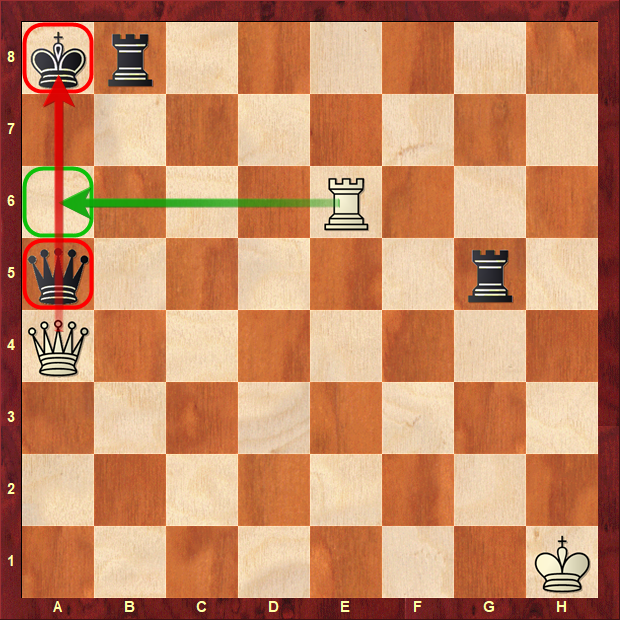
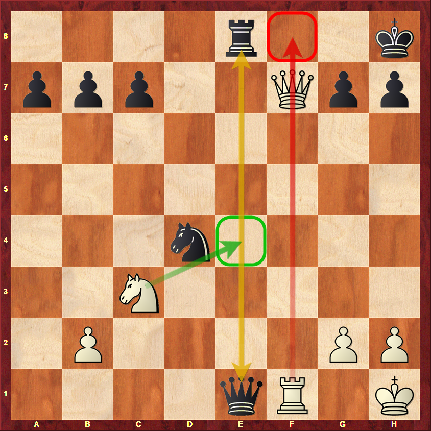
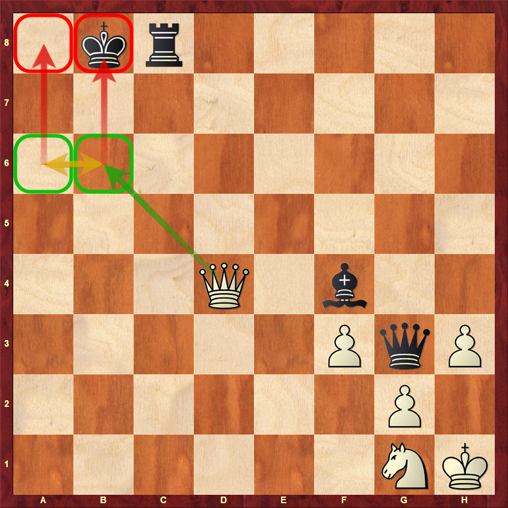
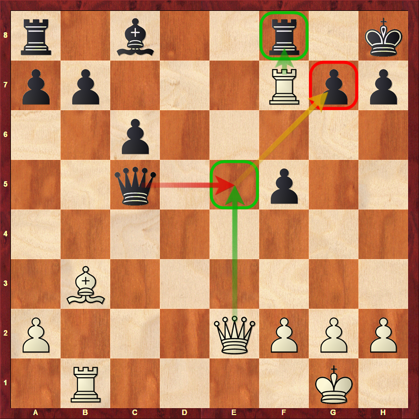

Los trucos tácticos se pueden clasificar dependiendo del tipo de amenaza y de la manera en que se produce.
La Enciclopedia del Medio Juego de Ajedrez identifica las siguientes categorías: ataque doble, ruptura de peones, bloqueo, atracción, ataque descubierto, peón pasado, ataque de rayos X , intercepción, desviación, clavada, sobrecarga, aniquilación de la defensa, jaque perpetuo, jugada intermedia, y eliminación del espacio.
Llamamos combinación a la aplicación de varias ideas tácticas en una jugada.
Doble ataque directo
Es un movimiento que crea 2 amenazas a la vez con la misma pieza. Los ataques pueden amenazar directamente piezas contrarias, o pueden ser amenazas de otra clase: por ejemplo, capturar a la reina y dar jaque mate.
|
 |
Clavada
Una clavada hace que se imposible o inconveniente mover una pieza defensora, porque si lo hiciera expondría una pieza más valiosa, normalmente el rey o la dama. La pieza clavada hace de escudo y, si es el rey quien está detrás, no se puede mover, porque quedaría en jaque. Solamente pueden hacer clavadas las damas, torres y alfiles.
|
 |
Ataque descubierto
Consiste en crear dos amenazas en un solo movimiento, la primera con la pieza que se mueve y la segunda con la pieza que estaba detrás y que ha quedado descubierta, es decir, una pieza se aparta para permitir el ataque de un alfil,torre, o una dama. Los ataques descubiertos suelen plantearse para ganar material mediante un ataque doble. A diferencia del tenedor, en el que una sola pieza crea un ataque doble, aquí dos piezas propias crean amenazas simultáneas que el oponente no puede atajar.
|
 |
Enfilada
Las enfiladas están estrechamente relacionadas con las clavadas. De hecho, se parecen mucho, pero a la inversa. En una enfilada, una valiosa pieza es atacada y obligada a mover para evitar ser capturada, dejando una pieza menos valiosa detrás de ella sin protección. Como en las clavadas, las enfiladas sólo pueden ser creadas por las piezas de largo alcance. |
 |
Jugada intermedia
Se trata de un truco impactante que se usa a menudo como una respuesta contra un ataque. Un movimiento intermedio es el que que interrumpe una secuencia de movimientos de modo que el jugador obtenga ventaja. Es un movimiento del jugador que no fue considerado por el oponente en el cálculo de su variación o combinación. La jugada intermedia puede alterar nuestros cálculos, los planes de cambio o provocar el fracaso de las combinaciones. En el diagrama anterior la dama blanca ha capturado un alfil en e5 pensando que la captura de la dama por el peón es a costa de la dama negra en d7. Lo que no vieron las blancas es la jugada Dg4 amenazando un mate que solamente puede ser evitado avanzando el peón de la columna g, con lo que las blancas pierden la dama. 1. Dxe5 Dg4 2. g3 dxe5
|
 |
Rayos XUn ataque de rayos X ocurre cuando una pieza de ataque es defendida por una pieza que parece estar obstruída por otra pieza enemiga. En este caso la torre negra no puede impedir el mate ni con la ayuda de su dama. |
 |
Interposición
La interposición se produce cuando se interrumpe la línea entre una pieza y su defensa mediante una pieza propia. Este motivo táctico es poco frecuente y por eso es fácil pasarlo por alto. La interposición no es una amenaza por si misma, pero puede tener varios motivos secundarios, como debilitar la protección de las piezas o desviar una de ellas. En el gráfico anterior ambos jugadores amenazan con dar el mate del pasillo y parace haber cierto equilibio, sin embargo, el blanco juega Ce4 y corta la conexión entre la dama y la torre negras. Ahora la dama se ve forzada a tomar el caballo (También podría tomar la torre) y las negras reciben el mate del pasillo con Df8+ seguido de Txf8 y Txf8++ .
|
 |
Jaque perpetuo
El jaque perpetuo se produce cuando un jugador puede forzar las tablas mediante una serie interminable de jaques. Si el jugador no tiene posibilidades de ganar o se encuentra en una posición inferior y se le presenta esta oportunidad, no debe dejarla pasar, para conseguir al menos un empate. En la práctica las tablas se alcanzan por la triple repetición de la posición. En el diagrama anterior la dama blanca puede dar jaques perpetuos desde las casillas b6 y a6, de manera que se libra del inminente mate de Dh2++ y consique las tablas. e.
|
 |
DesviaciónEl objetivo de la desviación es distraer a un defensor y hacerle abandonar su puesto para que descuide la pieza o la zona que estaba protegiendo. Está relacionado con la sobrecarga de una pieza clave en el papel defensivo y puede implicar un sacrificio. En el diagrama anterior las blancas juegan 1.De5 amenazando mate en g7. Di las negras capturan la dama es el mate del pasillo con Txf8. La otra alternativa es entregar la dama con 1...Txf7 2.Dxc5
|
 |